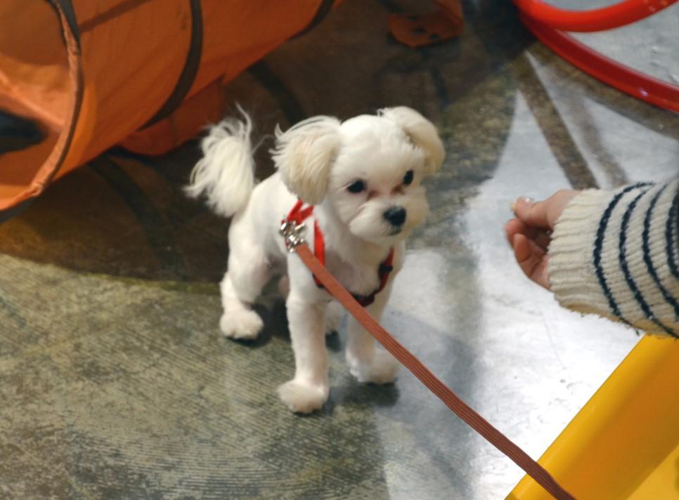

|
[생활/기타] 오울 견종 소개: 말티즈 등록일:2023.03.09

"말티즈는 사나운 견종입니다."
"네? 사납다고요? 허.. 사람을 얼마나 좋아하는데요?"
"말티즈는 사람을 아주 좋아합니다. "
"그래요? 우리 집 말티즈는 너무 사나워서 친구들이 집에 오지를 못해요."
"말티즈는 미용을 좋아합니다."
"근데 우리 말티즈는 미용실에서 쫓겨났어요.."
한 견종에 관해서 이야기를 할 때, 중요하게 고민하는 것이 있다며 누구에게 들려주는가? 입니다.
공격성 세미나에 온 말티즈 보호자들에게는 "말티즈는 사납습니다."라는 말이 솔깃할 것이지만, 도그쇼에서 말티즈를 사납다고 말하면 의아하게 생각할 겁니다. 그래서 저는 누가
이 글을 읽을 것인가에 대해서 고민부터 합니다. 이런 고민은 특정 견종에 대한 글을 쓸 때뿐만은 아닙니다. 행동에 대해 이야기를 할 때, 특정 교육방식을 이야기할 때도 마찬가지
입니다.
말티즈는 하얀색입니다. 어린 강아지 때는 양쪽 귀에 노란색의 털이 조금 있는 강아지도 있지만, 성견이 되면서 없어지거나 있어도 아주 조금 남아있습니다. 사이즈는 1kg에서 5kg
까지 다양하게 분포되어있는 것으로 보입니다. 이렇게 몸무게의 차이가 크게 나는 이유를 생각해보면, 아마도 티컵 강아지를 좋아하는 사람들의 요구로 점점 작은 강아지들이 태어
났기 때문인 것 같습니다. 또 실제로 몇몇 말티즈들은 강아지 공장에서 푸들과의 교잡으로 태어난 강아지를 말티즈라고 속여 입양 가는 경우도 있습니다. 이렇게 비정상적인 초소
형화와 다른 견종의 교잡은 말티즈의 본래의 모양이 많이 없어졌고 지금처럼 사이즈의 차이가 크게 나는 크기를 야기했으리라 생각됩니다.
또 이들은 이상하리만큼 유전적인 질병을 많이 앓고 있습니다. 피부가 약하고, 특히 슬개골 탈구와 치아 부정교합이 많이 보이는데, 그중 슬개골 탈구는 제가 보는 대부분
(80~95%) 말티즈가 가지고 있습니다. 물론 증상의 정도 차이는 있습니다. 하지만 이제 말티즈한테 슬개골 탈구는 당연히 있는 병이 됐으며 이것은 절대 일반적이지 않은 심각한 문
제입니다.
말티즈의 털은 이중모가 아닙니다.
다른 견종만 하더라도, 털을 자세히 보면 겉 털과 속털이 있다는 것을 알 수 있지만 말티즈는 단일모입니다. 이것이 다른 견종에 비해서 피부가 약한 이유일 수도 있지만 정확하지
는 않습니다. 정확한 사실은 그로 인해 추위에 약하다는 겁니다. 활동을 좋아하는 말티즈들은 산책을 너무 좋아합니다. 겨울철 추운데 어떻게 산책을 하느냐고 묻는 보호자가 있다면,
자신이 추워서 나가기 싫은 것을 인정해야 합니다. 혹한의 추위만 아니라면 보온에 좋은 강아지 옷을 입고 외출하여도 무방합니다.
치아 문제가 많이 있습니다. 이것은 모든 인기 견종의 특징이라고 해도 될 겁니다. 왜냐하면, 인기 견종은 많은 사람이 찾습니다. 그리고 업자들은 많은 강아지를 만들어내야 합니
다. 그럼 치아 교합이 좋든 안 좋든 유전적인 문제를 가지고 있든 없든 상관없이 그냥 임신을 시키고 강아지를 만들어냅니다. 또 하나는 근친교배입니다. 업자들에게는 전혀 상관없
는 유전적 질환이나 근친교배가 만들어낸 많은 문제 중에 하나가 치아 문제입니다. 부정교합과 같은 치아 문제는 반려견의 허리와 골반에도 문제를 일으킬 수 있다고 합니다. 말티
즈에게는 위와 같은 문제가 많이 있습니다.
음.. 이렇게 써보니, 문제가 많은 것처럼 보입니다.
성격은 다양합니다. 하지만, 호락호락하지는 않습니다.
말티즈에 대한 교육 의뢰의 절반이 짖는 문제이고, 절반이 공격적인 행동입니다. 그럼 교육 의뢰를 하지 않는 분들은?? 대체로 모두 만족하며 키우십니다. 한 전문분야의 사람들은
그에 관한 업무로 견종을 만납니다. 그러다 보니, 보통 스스로 한 견종에 대한 평가와 결론을 내리는 데 있어서 조심해야 하는 것이 있다면, 자신에게는 관련된 부류의 개체가 온다
는 것을 알아야 합니다. 한 마디로, 훈련사에게는 행동에 대한 고민으로 오는 사람들이 많을 겁니다. 그렇다 보니, 특정 견종에 대한 비슷한 문제행동이 있을 수 있습니다. 예로 말티
즈는 짖는 것과 공격적인 것으로 많은 의뢰가 들어옵니다. 하지만 전부의 말티즈가 그렇지는 않습니다. 또한 보듬에 교육문의로 들어오는 말티즈들의 대부분이 좋은 결과를 보입니
다. 하지만 알아둬야 할 것이 있습니다! 말티즈가 하얀색이고, 작고 예쁘게 생겼고 애교가 철철 넘친다고 해도.. 만만하게 봐서는 안 됩니다. 또 조용하고 얌전하고 수동적인 말티즈
를 원한다면? 꿈 깨는 게 좋습니다!
좋아하는 가족에게는 자신의 혼까지 받치는 견종이 말티즈입니다. 말티즈는 역사적으로 봐도 사람의 조작적인 개량이 많이 들어가지 않은 견종입니다. 역사가 깊다는 거지요. 이
말은 현대인들이 좋아하는 성향인 빠르게 배우고, 쉽게 적응하고, 어느 곳에서나 누구와 타협하는 타입이 아니라는 겁니다. 반대로 사람의 개입으로 탄생한 견종은 위와 같은 것들
이 사람들의 요구에 따라 개량됐기에 우수할 수 있겠지만, 말티즈는 그렇지 않습니다. 그래서 조금은 보수적입니다. 사람을 좋아해도 두루두루 좋아하기보다는 특정 몇 명을 좋아
합니다. 어쩜 한 명만 좋아하는지도 모릅니다. 그렇다 보니, 이 친구들은 타인에 대한 경계가 높은 친구들이 있고, 타 반려견과 잘 어울리지만 자기 뜻대로 안될 때 작은 몸을 날려서
라도 반격하고 가족을 지키려고 합니다. 이런 경호력이 역사가 깊은 견종들의 특징인데, 말티즈도 만만치 않습니다.
말티즈는 민삭발을 싫어합니다.
사실입니다. 그러니 이제 그만 민삭발로 미용해주세요.
말티즈는 힘으로 제압할 수 있는 견종이 아닙니다.
힘으로 제압하고 목줄로 숨을 못 쉬게 하여 항복을 받아낼 수는 있지만, 마음을 얻을 수는 없을 겁니다. 만약 말티즈에게 험한 도구(체인/쇼크)를 사용하여 교육하려는 사람은 큰 실
수를 하는 겁니다. 말티즈는 상황과 분위기를 살필 줄 압니다. 말티즈는 현재 자신이 어떤 행동을 해야지 가족에게 도움이 되는지 아는 친구들입니다. 그래서 말티즈는 짖고, 사납게
행동합니다. 한 마디로 그런 행동에는 이유가 있었다는 겁니다. 그럼 어떻게 이런 행동들을 완화할까요? 말티즈는 현재 상황을 자신보다 더 잘 파악하는 사람을 좋아합니다. 자신을
만지려고만 하고 말을 계속 거는 주인의 모습보다는 집안에 무슨 일이 있는지 먼저 살피는 진짜 보호자를 좋아합니다. 현재 많은 보호자가 말티즈를 그냥 애교쟁이 귀염둥이 꼬마
숙녀로 착각하지만, 그들은 꽤 집안일에 관심이 많아서 보호자가 그 도리를 못하고 있을 때 스스로 나서기를 좋아합니다. 어떤 사람들은 말티즈를 여자들의 반려견이라고 하지만
저는 그렇게 생각하지 않습니다. 말티즈는 멋지고 당당한 보호자의 견종입니다.
말티즈는 첩을 원하지 않습니다. 말티즈는 친구를 좋아합니다. 여기서 친구란, 일주일에 한두 번 만나서 커피 한 잔 마시고, 여행 가고, 이야기하는 그런 친구입니다. 그런데 그 친구
가 내 방 침대에 내 남편과 나 사이에서 잠자려고 한다면 이제부터는 친구라고 할 수 없습니다. 말티즈는 가끔 만나서 놀고 뛰고, 인사할 수 있는 친구를 원합니다. 보호자는 그런 친
구를 굳이 집으로 들이려고 하면 안 됩니다. 만약, 그러고 싶다면? 꼭 허락을 먼저 받으시길 바랍니다.
말티즈는... 특별합니다.
이 녀석들은 자신을 좋아하는 사람이 누구인지 정확하게 압니다. 누가 나를 좋아하는지.. 누가 나를 싫어하는지..
그런데 이상하게도 보호자가 좋아하는 사람이 누구인지? 싫어하는 사람이 누구인지? 까지도 알고 있는 듯합니다. 말티즈와 함께 사는 보호자라면.. 내 말티즈가 내 주변 사람들과
잘 지냈으면 좋겠다면.. 나부터 주변 사람들과 잘 지내보세요. 말티즈 다 알고 있습니다.
제가 훈련사 생활을 하면서 가장 친절한 인사를 받아봤던 견종이 있다면 아마도 말티즈일겁니다. 반대로 가장 많이 물려본 견종도 말티즈 일 겁니다. 그래서 많은 기억과 감정들이
산재합니다. 그런데 현재 제가 말티즈를 생각할 때, 첫 번째로 염려하는 것이 있다면 건강입니다. 지금 한국의 말티즈들은 너무 작고, 너무 약하고, 너무 많은 유전적인 질병을 앓고
있습니다. 꼭 진정성 있는 양심적인 브리더가 많이 생겼으면 좋겠습니다. 그리고 여러분들은 이제부터 강아지를 애견숍에서 입양하지 않으시면 됩니다.
|